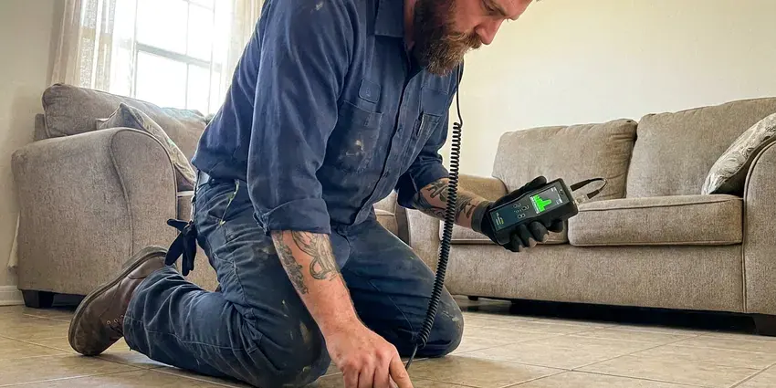

Plumbers Near Me in Westchester, FL
For prompt and professional plumbing services across Westchester, FL, look no further than the experienced team at HDF Plumbing.
- Upfront Pricing
- Guaranteed Work
- Upfront Flat-Rate Prices
- Licensed and Insured Team

Your Local Plumbing Experts are Here to Help in Westchester, FL.
Schedule your service with HDF Plumbing and get professional plumbing care tailored to your needs.
Expert Plumbers Near Me for Westchester, FL Homeowners
HDF Plumbing provides complete plumbing services across Westchester, FL. Our skilled technicians are equipped to address everything from leaky faucets and clogged drains to complex water heater issues and main line repairs.
Our expertise includes:
- Clear stubborn clogs from drains and sewer lines.
- Toilet, faucet, garbage disposal and fixture replacement
- Install and service water heaters, including tankless.

Additional Plumbing Maintenance Services in Westchester, FL
Our maintenance and specialty plumbing services in Westchester, FL protect your home year-round and extend the life of every system.


Customers
Why Choose HDF Plumbing for Plumbers Near Me in Westchester, FL?
Choosing a plumber is about trust as much as skill. We send background-checked technicians, explain every option and never start work without your approval.
- On-Time Arrival, We give you a real arrival window and call ahead when we are en route.
- Skilled Technicians, Every plumber is licensed, insured, and continuously trained on the newest plumbing technologies and repair methods.
- Local Expertise, Our plumbers understand the challenges of Westchester's soil and water conditions, which can impact plumbing systems.
Citywide Coverage
We serve single-family homes, townhomes, rentals and small businesses throughout Westchester. Being close by keeps response times short and travel charges down.
Experienced Team
The HDF Plumbing plumbing team is made up of dedicated professionals who take pride in their craft. They have deep knowledge of plumbing systems, allowing them to diagnose problems accurately and deliver effective, long-lasting solutions for our Westchester customers.
Safety-First Approach
We follow the plumbing code adopted in your city or county and pull permits for water heater, gas and repipe jobs when required. Every repair is tested before we leave.
Trusted Certified Westchester Plumbing Services Professionals
At HDF Plumbing, we take pride in providing certified plumbing services throughout Westchester, FL. Backed by recognized industry credentials, our experienced plumbers combine technical skill with genuine customer care. Whether it is repair, installation, or maintenance, we follow strict safety and quality standards to deliver long-lasting results you can trust.
Call Us Now PHCC Plumbing Contractor Recognition
PHCC Plumbing Contractor Recognition Better Business Bureau (BBB) Accreditation
Better Business Bureau (BBB) Accreditation Angi Certified Pro
Angi Certified Pro ISO 9001 Quality Management Certification
ISO 9001 Quality Management CertificationDependable Plumbers Near Me Services in Westchester, FL
Gas Line Repair and Installation in Westchester
We repair and install gas lines for water heaters, ranges, dryers, fireplaces and outdoor kitchens. All gas work is pressure tested, and we pull permits when the local code requires them. If you smell gas, leave the home and call your gas utility first, then call us for the repair. We use approved materials such as black iron and CSST with proper bonding.

Commercial Plumbing in Westchester, FL
HDF Plumbing extends its professional plumbing services to businesses and commercial properties throughout Westchester. We understand the demands of commercial plumbing systems, offering services from grease trap cleaning and backflow prevention to large-scale pipe repairs and fixture installations. Keep your business running smoothly with our reliable commercial plumbing solutions in Westchester, FL.
Emergency Plumbing Repairs in Westchester, FL
Burst pipes, overflowing toilets and gas smells cannot wait until Monday. Our emergency plumbers respond fast, shut off water or gas and make the repair or a safe temporary fix. We carry common parts to finish most emergency jobs in one trip. After-hours pricing is quoted up front.
Leak Detection and Pipe Repair in Westchester
Hidden leaks waste water and can damage drywall, cabinets and flooring. We use acoustic listening devices, thermal cameras and pressure tests to find leaks without unnecessary demolition. Repairs range from replacing a single copper fitting to rerouting a section of PEX. We also check for pinhole leaks, which are common in older copper lines exposed to aggressive water.
Drain Cleaning & Clog Removal in Westchester
Stubborn clogs can disrupt daily life. Our plumbers use advanced techniques, including hydro-jetting and camera inspections, to effectively clear blockages from sinks, toilets, showers, and main sewer lines. We identify the cause of the clog, whether it's grease buildup or tree roots common in Westchester's older neighborhoods, and make sure your drains flow freely.
Water Heater Repair & Installation in Westchester, FL
From traditional tank heaters to modern tankless systems, our plumbers specialize in water heater repair and installation. We diagnose issues like no hot water, strange noises, or leaks, and recommend the most energy-efficient solutions for your Westchester home. We work with leading brands like Rheem, AO Smith, and Bradford White, for reliable hot water for your family.
Slab Leak Detection & Repair in Westchester, FL
Limestone bedrock and sinkhole activity in some areas can shift the ground and damage buried water and sewer lines. Slab leaks are a serious issue that can damage foundations. Our team uses non-invasive acoustic and thermal imaging equipment to locate hidden leaks under your home's concrete slab. We then perform precise repairs, minimizing disruption and protecting your foundation from costly long-term damage in Westchester, FL.

Toilet Repair & Installation in Westchester, FL
A running toilet, weak flush, or persistent leak can waste water and drive up utility bills. Our plumbers are skilled at repairing all common toilet issues, including fill valve, flapper, and wax ring replacements. We also provide professional installation of new, water-efficient toilets that meet Westchester, FL building codes and improve your bathroom's function.
Your Local Plumbers Near Me in Every Westchester, FL Neighborhood
When you search for 'plumbers near me' in Westchester, you want a company that's truly local and easy to reach. HDF Plumbing is familiar with the plumbing infrastructure and issues that affect homes and businesses throughout Westchester, FL. We're not just a service provider, we're your neighbors.
Our commitment to the Westchester community means we provide fast, reliable service with a focus on long-term solutions, not just quick fixes. We understand that local conditions, such as water hardness and soil movement, play a significant role in plumbing health, and our work reflects that understanding.
HDF Plumbing at a Glance
- Licensed and insured plumbers serving Westchester, FL
- 24/7 emergency service with same-day scheduling
- Upfront, flat-rate pricing before work begins
- 4.9-star rated by 739+ Florida customers
Westchester Map
Westchester Information
- Population
- 56,384
- Area codes
- 954/786/305
- Service area
- Westchester and communities within 40 miles
- Nearby
- Fountainebleau, Tamiami, Kendale Lakes, Doral
Salt air in coastal parts of Florida corrodes outdoor fittings and exterior metal pipe faster than in inland areas. That makes solid and code-compliant plumbing services essential for homes in Westchester, FL to prevent costly damage and protect long-term system health.
Expert Services
Trust our professionals for reliable HDF Plumbing solutions in Westchester, FL.
Our Specialized Plumbing Services in Westchester, FL
At HDF Plumbing, we provide a complete range of plumbing services across Westchester, FL. From leak detection to full system installations, our team ensures fast, precise, and affordable service for both residential and commercial properties. Explore our core services below:


How Our Local Plumbing Service Process Works in Westchester, FL
Our process is designed for clarity and speed, so you get the plumbing help you need without hassle.
Request a Quote
Call (904) 925-7356 and describe the plumbing problem you are having. We schedule a licensed plumber and give you a clear arrival window.
Diagnose and Price
Your plumber inspects the issue and explains the options. You receive a written price before any work starts.
Repair and Review
We complete the repair, test everything and clean up. Then we review the work with you and answer any questions you have.
Frequently Asked Questions About Plumbers Near Me in Westchester
Plumbing costs in Westchester can vary widely depending on the type and complexity of the service. A basic service call or minor repair, like a faucet drip, might range from $150-$300. More involved jobs, such as water heater replacement or slab leak repair, can range from $800 to several thousand dollars. We provide upfront, transparent pricing after diagnosing the issue.
Yes, HDF Plumbing stands behind the quality of our work. We offer comprehensive warranties on both parts and labor for our plumbing services in Westchester, FL. Specific warranty details will be provided with your service agreement, for your peace of mind.
We service and install a wide range of reputable brands. For water heaters, we commonly work with Rheem, AO Smith, Bradford White, and Navien (tankless). For fixtures, we handle brands like Moen, Delta, Kohler, and American Standard. We can advise you on the best options for your needs and budget in Westchester.
Yes. We serve restaurants, offices, retail stores and multifamily buildings. Services include backflow testing, grease traps, commercial water heaters and restroom fixtures.
Signs of a slab leak in your Westchester home include unexplained high water bills, warm spots on your floor, the sound of running water when all fixtures are off, visible cracks in the foundation, or mildew odors. If you suspect a slab leak, it's crucial to call a professional for immediate detection and repair to prevent structural damage.
Yes. Our company holds the plumbing license required in Florida, and our plumbers are trained and supervised accordingly. Plumbing contractors in Florida must be state certified or locally registered, and permits are typically required for water heaters, repiping, and sewer work. We also carry liability insurance and workers compensation.
Hard water contains high levels of dissolved minerals like calcium and magnesium. Soft water has these minerals removed. Many wells in Florida produce water with a sulfur smell or high iron, which often calls for filtration to protect fixtures and appliances. Hard water can lead to mineral buildup in pipes and appliances, reduced soap lather, and dry skin. We can test your water in Westchester and recommend treatment solutions.
While minor clogs or drips might be DIY-friendly, most plumbing issues are best left to professionals. Attempting complex repairs without the right tools or expertise can lead to more significant damage, costly mistakes, or even safety hazards, especially with gas lines or structural plumbing. Professional plumbers have the training, tools, and experience to diagnose and fix problems properly and safely.
What People Are Saying About Our Plumbing Experts?

Mark T.
When our office needed drain cleaning, HDF Plumbing provided quick, reliable service. The plumber arrived on time and made sure every drain flowed perfectly before leaving. Very satisfied.
Drain Cleaning · Fountainebleau, FL
Sofia M.
Two new toilets installed in one visit, no mess left behind, and the tech even adjusted a faucet he noticed was dripping. Fair pricing and really friendly.
Toilet Installation · Kendall, FLLaura S.
I scheduled a water heater replacement, and the team made the process smooth and affordable. The new unit works perfectly, and they cleaned up after completing the job.
Water Heater Replacement · Tamiami, FL
Patricia H.
We had a slab leak that two other companies could not find. HDF Plumbing located it in under an hour, explained our options, and the price matched the quote to the dollar.
Slab Leak Repair · Westchester, FL
Daniel K.
A pipe burst at 11 pm and they actually answered. The plumber showed up within the hour, shut everything down, and had us back to normal the next morning. Could not ask for more.
Emergency Plumbing · Kendall, FL
James P.
Our commercial plumbing system had a leak under the sink, and HDF Plumbing handled it professionally. The plumbers arrived quickly and restored everything without disruption to our customers.
Commercial Plumbing · Fountainebleau, FL